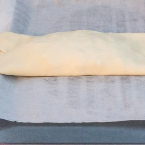
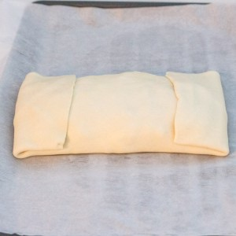
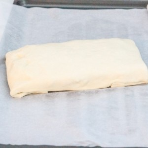

Friand au fromage

Aujourd’hui je vous retrouve avec une recette mythique de mon enfance (et je pense de l’enfance d’un peu tout le monde) car il s’agit d’une recette de friand au fromage… mais pas que!
Je suis presque sûre de pouvoir dire qu’on a tous manger des friands au fromage quand on était petit et notamment à la cantine. De mon côté c’était l’entrée numéro un que l’on nous servait au self et j’en raffolais (bien que maintenant je me demande vraiment si c’était du « vrai » fromage qu’il y avait à l’intérieur^^). Les plus sages avaient droit à deux friands alors autant vous dire que ces jours-là je me tenais à carreau!! Je ne sais pas pourquoi je n’en ai jamais refait alors que j’adorais ça et puis l’autre jour ça m’a pris d’un seul coup. Bon évidemment le friand dont je vous parle aujourd’hui ne ressemble pas beaucoup à celui que l’on nous servait à la cantine mais il en a au moins la forme.
Dans mon friand, en plus du fromage (j’ai choisi du brie) vous trouverez du canard mais aussi des pommes et des petits oignons. Pour moi un friand ça doit se préparer rapidement alors ne vous en faites pas cette recette est ultra rapide (mais surtout ultra gourmande^^). Ici, pour des raisons pratiques, j’ai présenté cette recette sous la forme de deux gros friands mais vous pouvez aussi bien découper votre pâte feuilletée en petits rectangles pour en faire de simples petites entrées accompagnées de quelques feuilles de salade et ce sera parfait. Dans un futur proche il est clair que je reviendrai avec une recette d’un simple friand au fromage car rien qu’en écrivant l’article j’en ai très envie mais en attendant je vous laisse avec ma nouvelle version du friand et j’espère qu’elle vous plaira!!
Ingrédients
- Pomme - 1 grosse pomme
- Oignon - 1
- Aiguillette de canard - 280g
- Brie - 90g
- Chapelure - 50g
- Noix de muscade - 1 càc
- Pignons de pin - 1 poignée
- Pâtes feuilletées - 2
- Sel
- Poivre blanc
- Huile d'olive
- Oeuf pour la dorure - 1
- Graine de sésame - 1 poignée
Instructions
- Couper la pomme et l'oignon en tout petits morceaux Vous pouvez vous aider du mixeur en donnant de petits à coups.
- Dans une poêle, sur feu moyen, verser un peu d'huile d'olive
- Ajouter les pommes et l'oignon
- Laisser cuire à feu doux pendant 10 minutes en remuant de temps en temps Les pommes ne doivent pas fondre. Elles doivent juste ramollir légèrement mais sans se défaire
- Au bout des 10 minutes, sortir du feu et laisser refroidir
- Pendant ce temps couper les aiguillettes de canard en petits dés
- Saler, poivrer et saupoudrer d'herbes de Provence
- Couper le brie en dés
- Quand le mélange pommes-oignon a refroidi ajouter le canard, le brie et la chapelure
- Mélanger
- Ajouter quelques pignons de pin et mélanger
- Goûter et assaisonner davantage si nécessaire (vous pouvez cuire dans la poêle une toute petite partie de la farce pour ajuster votre assaisonnement si nécessaire)
- Préchauffer le four à 180°
- Étaler votre pâte feuilletée
- Diviser la farce en deux part égales
- Former et déposer un "boudin de viande" au centre de chacune des pâtes
- Refermer comme sur les photos
- Badigeonner d'un peu d’œuf (battu) à l'aide d'un pinceau
- Vous pouvez faire des formes sur le dessus (en rapport avec l'automne, avec Noël par exemple) ou seulement faire des petits traits comme moi
- Enfourner pour 35 minutes environ (vérifier la cuisson car selon les fours la cuisson peut varier) Le friand doit être doré!
- Bon appétit!!!



Les tips de la communauté
Recette revisitée avec succès, appréciée pour transformer un classique d'enfance en version adulte. Bien reçue avec retours positifs de lecteurs ayant testé.
Astuces
- Bonne façon de revisiter un classique enfantin en version adulte
- Association succulent fromage-feuilleté fonctionne bien
- Alternative au fromage brie disponible selon les préférences
- Recette bien expliquée et facile à réaliser
Variantes suggérées
- Remplacer le brie par d'autres fromages selon les préférences
Ajustements signalés
- toujours rendre à César …